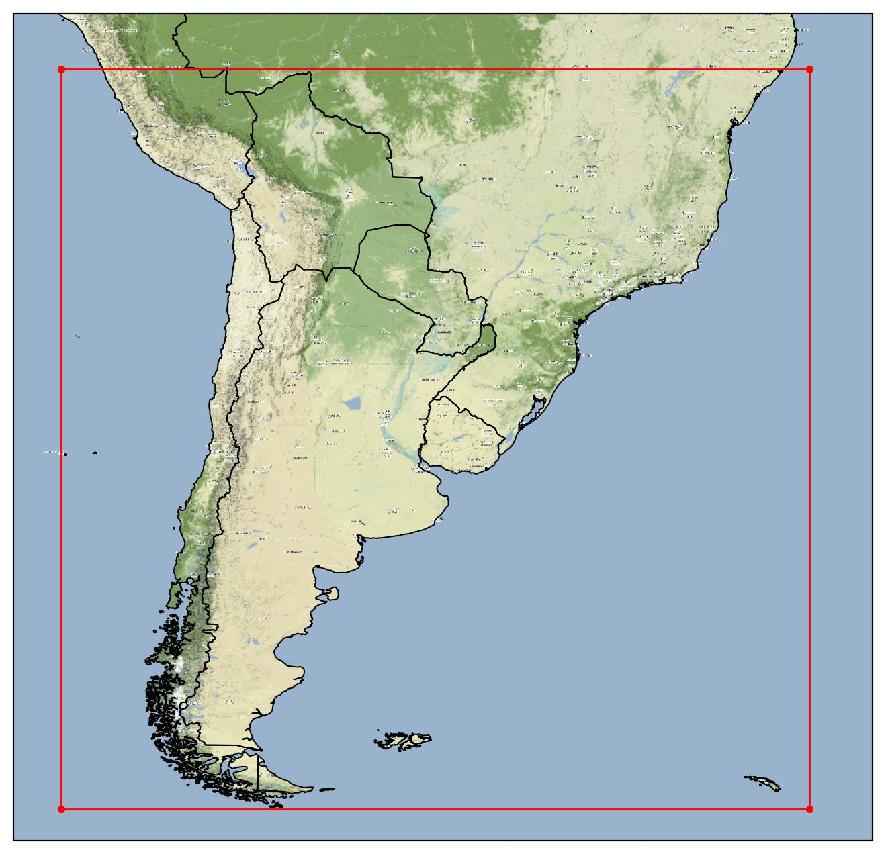

Información general
En el marco del Sistema de Información de Sequías del Sur de Sudamérica (SISSA) se ha desarrollado una base de predicciones en escala subestacional y estacional con datos corregidos y sin corregir, con el propósito que permita estudiar predictibilidad en distintas escalas y también que sirva para alimentar modelos de sectores como agricultura e hidrología.
La base contiene datos en escala diaria entre 2000-2019 (sin corregir) y 2010-2019 (corregidos) para diversas variables incluyendo: temperatura media, máxima y mínima, así como también lluvia, viento medio y otras variables pensadas para alimentar modelos hidrológicos y de cultivo.
El área en la cual se tienen datos, corresponde a aquella que abarca el Centro Regional del Clima para el sur de sudamérica (CRC-SAS), que incluye a Bolivia, centro-sur de Brasil y hasta la Patagonia incluyendo los países miembros como Chile, Argentina, Brasil, Paraguay, Uruguay y Bolivia. La resolución espacial de los datos es la reticula de 0.25°. El área abarcada se puede ver en la siguiente figura:

Dominio SISSA delimitado en rojo
La base fue generada a partir de datos de GEFSv12 para escala subestacional (GEFSv12) y CFSv2 para escala estacional (CFSv2). Para la corregir los datos, se utilizaron los datos del reanálisis de ERA5 (ERA5).